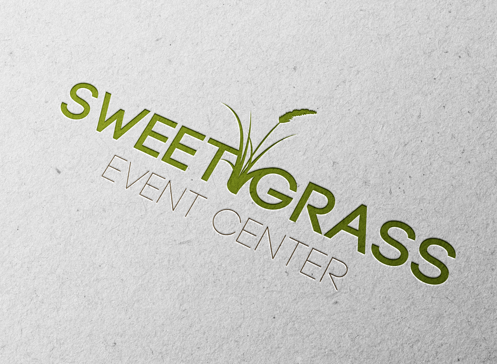
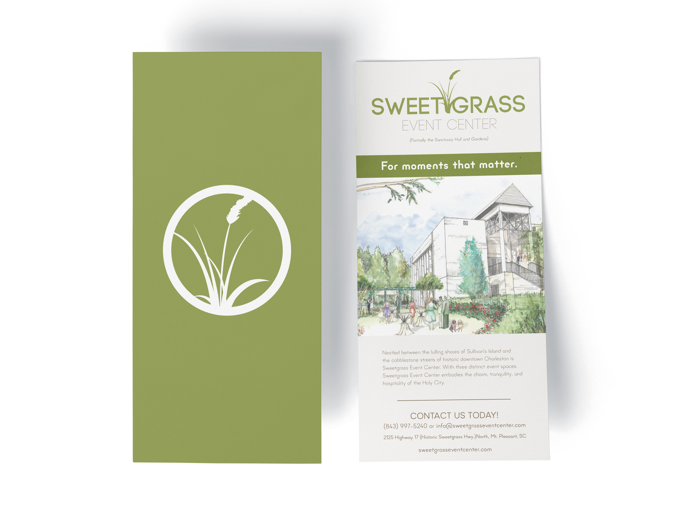
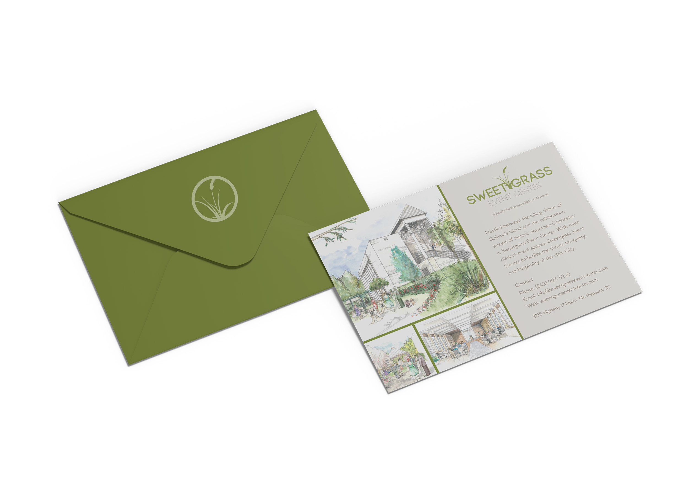

Brand development from the ground up for a unique Charleston event venue — logo, positioning, and print collateral.
Sweetgrass Event Center was a brand-new venue with no visual identity, no positioning, and no market presence — opening in one of the most competitive event markets in the country. Tucked between Sullivan's Island and historic downtown Charleston, the space itself was stunning: towering windows, a striking marble aisle, lush courtyard gardens. But without a brand, it was invisible to the couples, planners, and corporate clients who needed to find it.
Charleston doesn't lack event venues — it lacks affordable ones that don't feel cheap. Sweetgrass had a real differentiator: three distinct, flexible spaces with the charm and hospitality of the Holy City, at a price point that doesn't require a second mortgage. The brand needed to communicate that balance — luxurious enough to trust with your wedding day, approachable enough to actually book. Get the positioning wrong and you're either competing with plantation estates on price or hotel ballrooms on atmosphere. Neither is a fight worth having.
I built the Sweetgrass brand from the ground up — positioning, logo system, print collateral, and website. The visual language draws from the Lowcountry itself: natural textures, warm metallics, and clean typography that feels elegant without being precious. The logo works across everything from large-format signage to embossed napkins. The brand positioning centers on one idea: unforgettable moments in one of the most desired cities in the world, made accessible.
The result: a brand that earned trust before the doors even opened. Sweetgrass launched with a fully realized identity that positioned it exactly where it needed to be — premium but not pretentious, intimate but scalable, and unmistakably Charleston.


